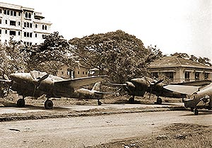

|
j
a v a s c r i p t |
Pg.2/4
November 13, 1944
Just before 1300 I went out and bought two loaves of bread at P55 each (up from P35 in five days), dropped them home then set off for Maurice's. Biking down the long, lonely stretch of the San Juan Bridge, where the Philippine-American war began 46 years ago, I was overtaken by seven carrier planes at 500 feet swinging and swaying like Sammy Kaye, each with four stars on the edge of their clipped wings; one firing his machine guns toward the Santa Mesa Station. Then I heard big roars and realized many more were on the way.... For the next fifteen minutes, I became fast-friends with one tiny little tree that was poor company for all that it tried to shield me. It wasn't the planes (though once, a few appeared to turn and dive on me) but the antiaircraft that was frightening. The low, gleaming targets attracted the attention of a battery behind them. Falling shrapnel was bad enough, but soon bullets started to scream by, making syrupy, sucking and whistling sounds before exploding loudly somewhere behind — always seemingly near. I forgot all about the adage that the bullet you hear has passed you already. At one time I cursed the earth because I couldn't burrow myself deeper. Then it stopped. A fellow in a bike came over and said: "First time that I've been scared. What good are these trees anyway?" I simply answered: "Amen." Back on my bike I hastened over to Maurice's, arriving just in time for the start of the next wave. This time I enjoyed a beautiful view of the planes diving on the southern airfields. Fires there that had petered out this morning started up again. One of two oil fires was huge. The audacious lads overflew Camp Murphy at 2,000 feet without drawing any antiaircraft fire, looking as if they were going to land.

Bombers in Dewey Blvd.
Later we went to the Gonzalez house where the view was even more magnificent. I counted thirteen fires in the Bay, four of which were huge oil fires. More fires started in Cavite, two of which were large. Then the Americans hit the "secret" airfield by the Bay where the Japanese had been hiding their bombers. Wave after wave of planes came and started more fires. By 1600 a dark, heavy pall of smoke completely obliterated the view of Manila Bay. The Pandacan fire, the most spectacular of the day, had long since petered out. At 1630, a reconnaissance plane with one fighter escort circled Manila at 4,000 feet. I watched them with binoculars — they drew no antiaircraft fire. |
|
|
|
|